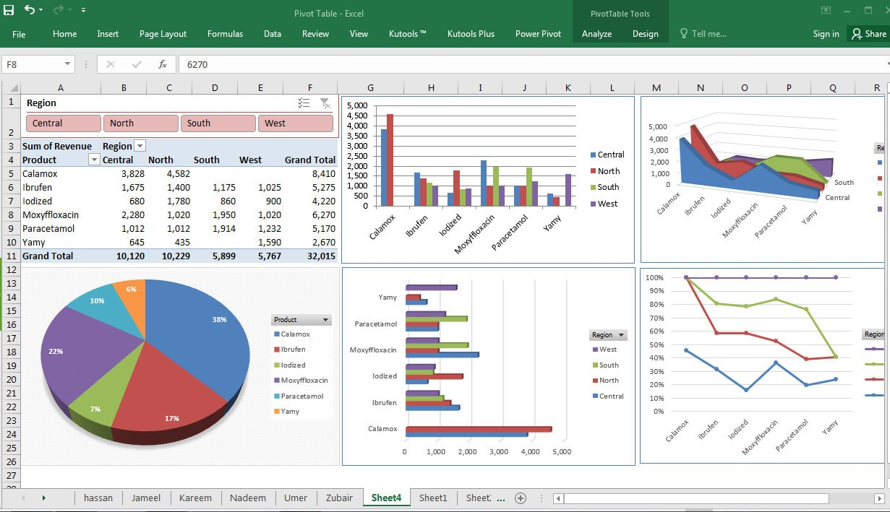

This project involved the cleaning of house data from zillow in SQL. The cleaning process involved changing data types, standardizing date formats, data labels, removing duplicates, splitting and populating columns among other functions
This project involved exploration of COVID-19 data using agreggation functions, MAX, MIN, Group by, order by, joins, CTE, views, stored proceudres among other functions

This project compares the deaths and survival rates of COVID-19 patients with underlying obesity verses those with undelying Diabetes.The project utilizes calculated fields, data joining, mapping and animations among other techniques in Tableau

This project fully utilized excel to identify areas of quality care Improvement using facility data from John Hopkins, click on the "view project" link to download and view the excel sheet with the data, V-look up use, pivot tables and interactive dashboards, you can click on the image to dowload and view the corresponding powerpoint for the project all from github.
 This project involved exploring house data from Zillow and conducting univariate and multi-variate analysis statistically and using visualization in python.
This project involved exploring house data from Zillow and conducting univariate and multi-variate analysis statistically and using visualization in python.

This project involved buiding a predictive model using the linear regression model in Python. The model was trained on house data and aimed at predicting house prices. Different combinations of the predictors were selected and tested continually before settling on the final combination that resulted in a better model with relatively higher R2 score for both train and test datasets. Mean absolute error was also used in addition to the R2 for model accuracy measurement.

The Challenge;
"This week's challenge comes to us from @Original_Yodies. For those of you who work in the energy sector, and specifically drilling, you'll get some industry-specific practice with this challenge!
You are given data with dates when a rotating component (a "washpipe") is replaced on a giant offshore drill called a "topdrive". Each month, you are also given daily data for the amount of time a rig is circulating and/or drilling.
Find the number of circulating or rotating hourse for each installation of a topdrive washpipe. Additional details and assumptions are provided in the start file".